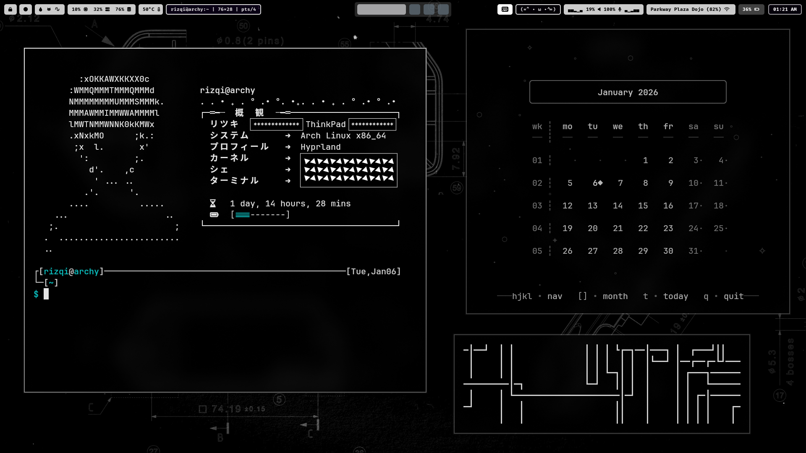
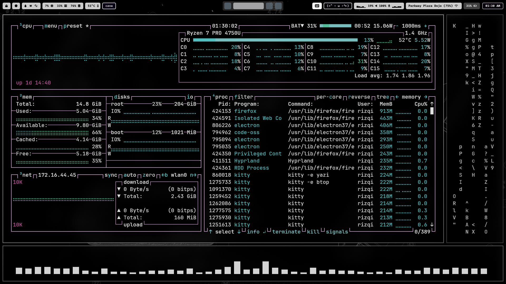
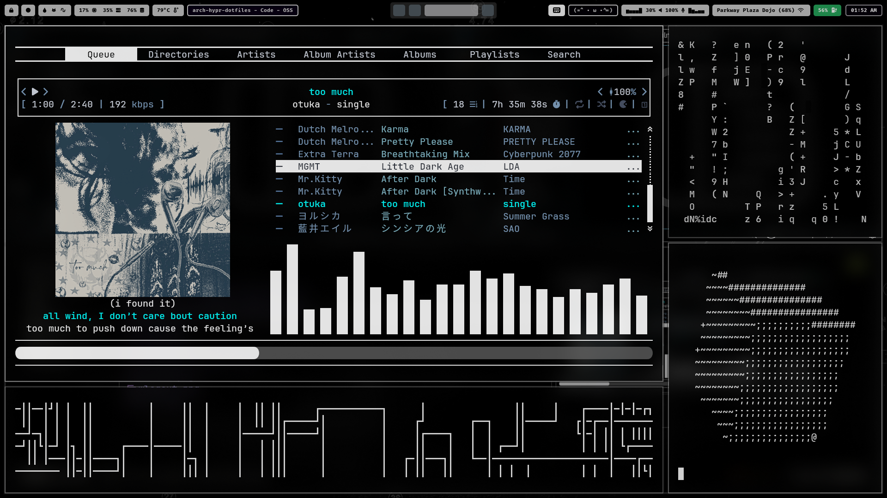
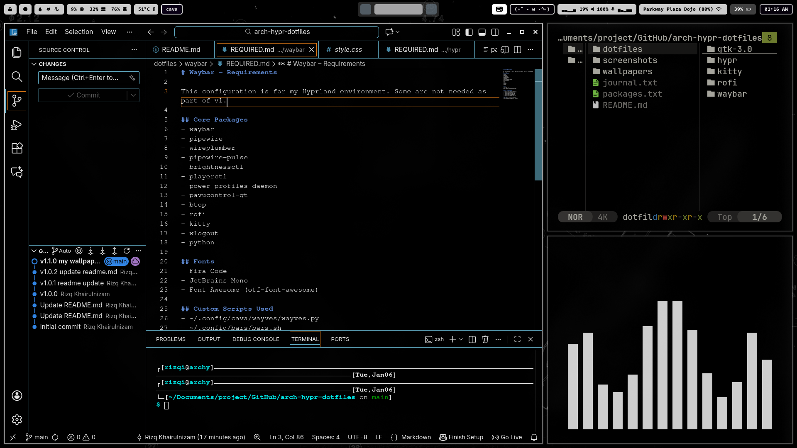
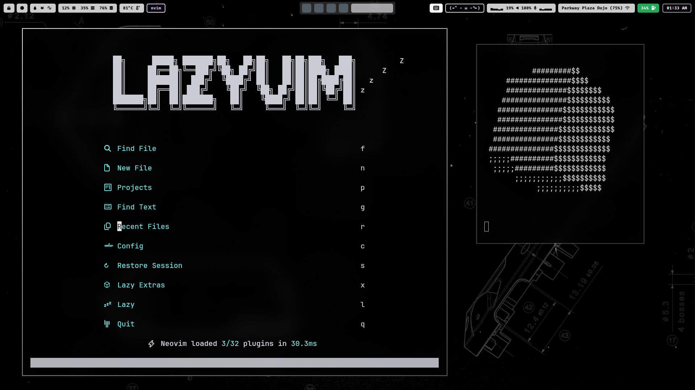
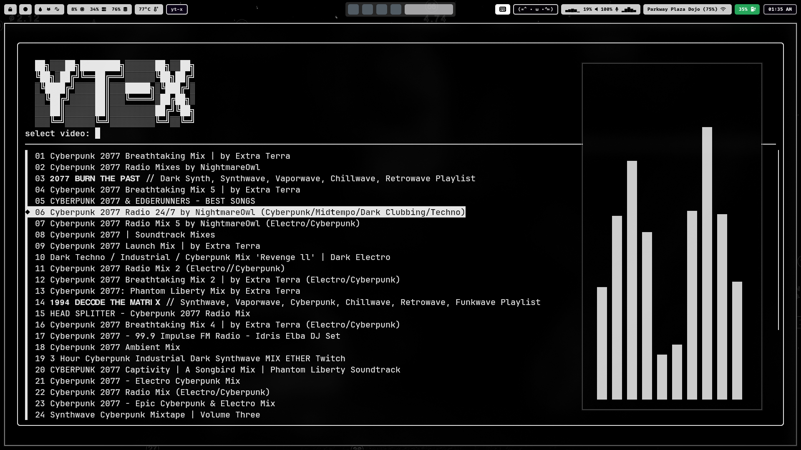
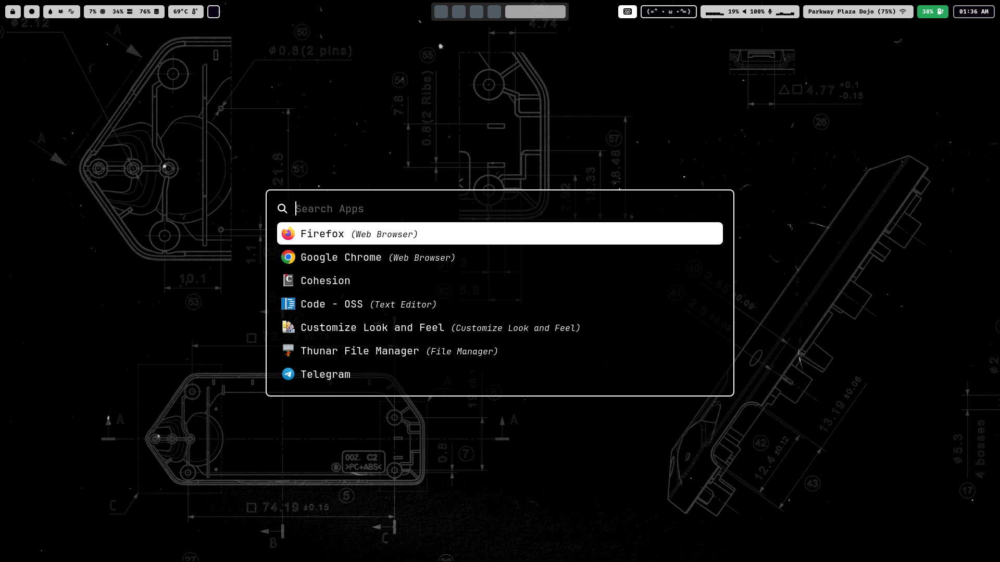
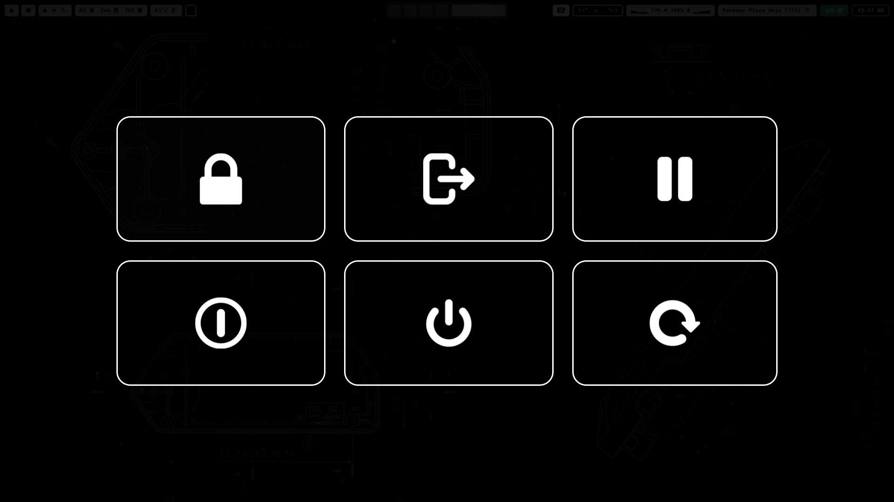

Arch Linux + Hyprland System Customization
I am more than happy to have gone through the excruciating pain and sleepless nights just to perfect(what?) my Arch environment. Now here's the fun part, writing it down and share a few surface level stuff. I am NOT a professional (unlike some arch users out there) and please take everything I say with a truck load of salt :>
[*] Fair warning: a whole lotta yapping
What is Arch Linux?
Ohhhhhh boy HAHHAHAHAHAHHA buckle up.
Arch Linux
(a.k.a Arch) is a lightweight operating
system (OS) for people who want near-full control
over their computer. It is a
Linux distribution
(a.k.a distro) that let's you do a lot of cool sh*t.
Unlike most systems that come with everything right
out of the box, Arch starts almost empty and let's
you choose what you want to put in it.
Simply put: You have total freedom and you decide what
runs and what doesn't.
Sounds great doesn't it? Yeah that depends. It can
either go amazingly well or it can be painfully
horrible. From my experience, read + experiment.
Questions like "hey what does this do?" and "what
happens if I delete this?" along with reading up
posts in forums from other users will teach you a LOT.
Trust me, I know (learned it the hard way lmao).
The more the reason to be hyped about it. However,
Arch isn't the only thing we need for a complete
environment.
What is Hyprland?
Aite I'll be honest, I had to read up on some of this stuff so bear with me here ;-;
Before I talk about Hyprland, I need to explain what we're dealing with here. So Arch is the OS but when you install it, the installation process will prompt you for a "desktop environment" (yeah i know my stuff alright) in order to have a complete setup because Arch won't have one by default. A desktop environment (DE) is the visual layer that provides things like windows, panels, menus, wallpapers, and basic system tools so you could use a mouse and a keyboard. Without it, you are literally going to use Arch with just a terminal. It looks pretty sick actually but you can't do much in terms of ricing it without a DE. But then you might be thinking, "If DEs give us basic tools, then Arch DOES work right out of the box, right?" Not...quite...
Here's the weird bit, Hyprland isn't technically a DE. We have this other thing called a window manager (WM). Instead of introducing menus, wallpapers, and basic system tools, WMs only control how windows open, move, and are arranged on the screen. They do not include stuff like a taskbar, settings app or even a file manager. It simply tells Arch, "hey I'll determine and control how you should order the window panels on screen". This is great because just like how we want our system to be empty (like my life) upon installation, a WM is perfect for this. But wait...so Hyprland is a WM? well...
Hyprland is a dynamic tiling Wayland compositor. Yeah. I wish I'm joking. Basically, it is a bit different compared to its WM cousins (like i3 and Sway). Hyprland is more modern and highly customizable. This makes it look wayyyy better especially with some of those satisfying animations. I haven't tried the other ones but I honestly think that Hyprland is one of the best combos out there for Arch. Match made in heaven.
Pacman
So now you know what Arch and Hyprland is, but how do we download stuff? Let me introduce you to Arch's package manager, pacman (get it? PACkage MANager? ahah). A package manager is the tool used to install, update, and remove software on the system and pacman is Arch's package manager. This is how you get programs on and off your system. Instead of downloading them from websites (since you won't even have a browser to begin with), you download them straight from your terminal! (once you've figured out how to connect to the internet via terminal lol). Pacman is also the tool you use to update your system. It was a weird concept to me when I started using Arch BUT with time, you just get used to it. If you are looking for a way to get the hang of using the command line and terminal, use Arch. As a guy who needs to learn and use the Linux Command Line, being on Arch helps since all you'll do is interacting with the terminal. If you hate it, man I've got news for you hahahahhaha
Some Tools, Programs and CLI Animations
Arch isn't complete without some downloads. Aside from the standard programs (like VSCode, Telegram), here are some of my favourites that make my setup feel like home:
- neofetch (i dont remember if this was pre-installed or not but eh)
- waybar
- yazi file manager
- rofi launcher
- lvsk-calendar
- btop task manager
- yt-x (yt on terminal)
- rmpc media player
- lazyvim (neovim fork)
- cava audio visualizer
- mapscii (a literal ascii map projection)
- cmatrix animation
- pipes animation
- rotating cube animation
Gallery








Final Thoughts
I'll be honest, I don't think this will be a simple little project post if I get into the tidbits of things. I made a github repo that contains my dotfiles and my rofi dmenu stuff (along with the screenshots and some cool wallpapers) if you want to dive deeper. This isn't meant to be a tutorial (oh god no) on how to get things started because if I must be honest with you here, I don't even wanna go through the installation process again...
I started doing this around early-2025 and I have come far enough to kinda know what I'm doing and dumb enough to make stupid mistakes. I could literally make changes that would make certain stuff stop working. Like an idiot. Here's the thing. Don't be afraid to make changes to those config files. Crawl through your directories, see what's in them. It's fine if you don't wanna change them, read through them. What do they do? what do they mean? I'll tell you this right now, you will not stop learning, but that is also the fun part. But you will still, at some point, feel like you got a good view of what and how things are. Once you get comfortable with the terminal and the system, change it a bit and maybe even write your own thing. I wrote my own settings menu via rofi's dmenu. The possibilities are endless. Go crazy.
Happy tinkering.